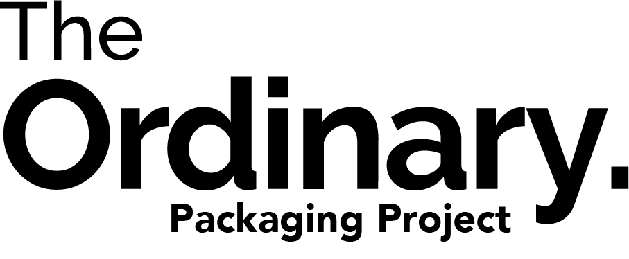
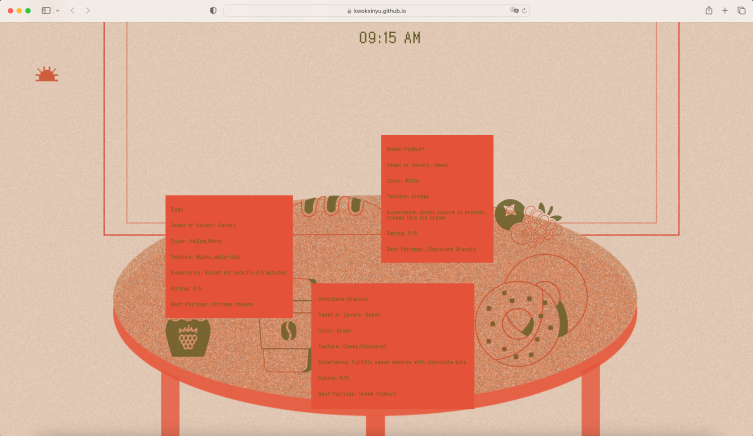
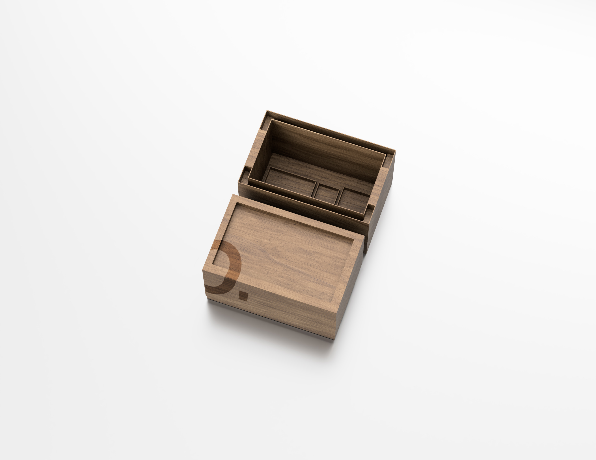
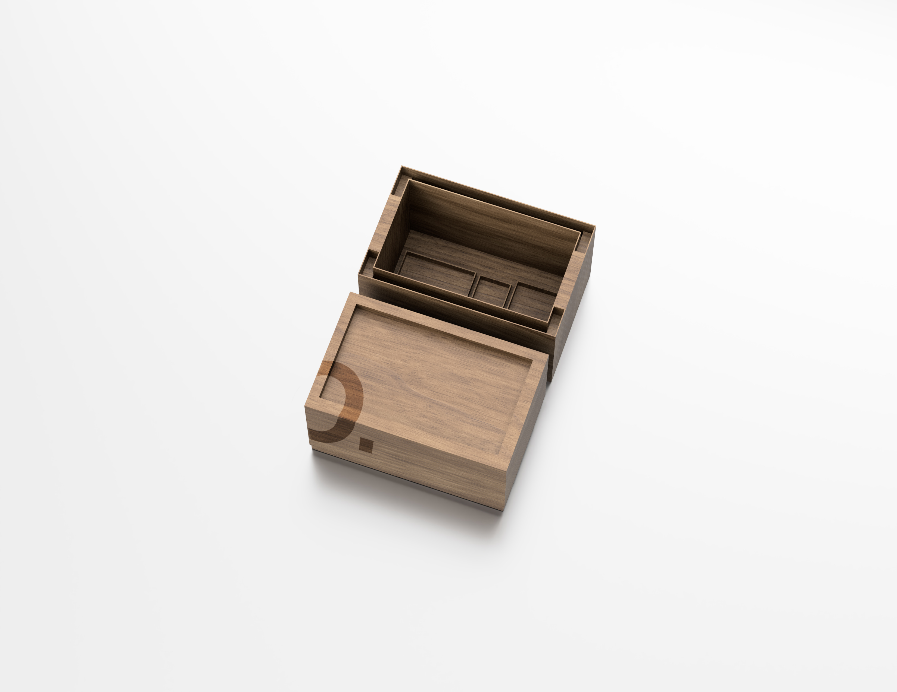
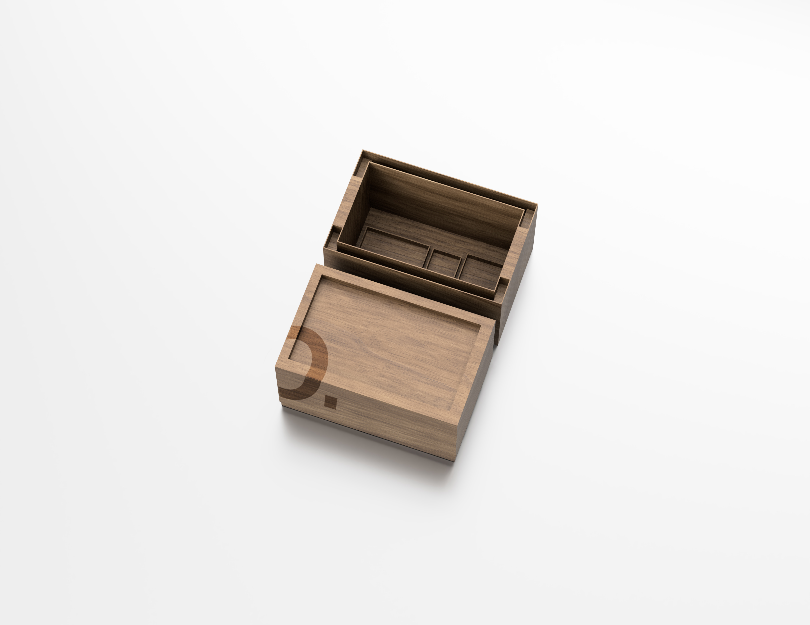

Interactive Web Design
Motion Poster Design
Poster Design
Packaging Design
User-interface Design
Book Design
Motion Poster Design
Poster Design
Packaging Design
User-interface Design
Book Design

March 2024
February 2024
March 2024
An influenced Graphic Designer who immersed herself in Hong Kong, Shanghai, and New York

 


NAME:
Xinyu Vanessa Kwok
Daily TheTable was inspired by the documentation of my personal eating habits of breakfast, lunch and dinner.
The multi-page web design focuses on displaying the customized collection, as well as touching upon the accessories
of the web as a medium: the use of texture, vectorised icons, and digital typography.Â
The project explores the ideation of map interpretation. The visualistion identifies the theoretical astronomical map of The Stonehenge,
a prehistoric megalithic structure on Salisbury Plain in Wiltshire, England, two miles west of Amesbury. The map intends to provide multiple
perspectives of the monument while incorporating typographic elements.
The Ordinary Packaging project seeks to revolutionize the way products are packaged, focusing on reducing waste and minimizing environmental impact. By leveraging
biodegradable, recyclable, and reusable materials, the project aims to replace traditional plastic and non-sustainable packaging options with greener alternatives. The designed
box also holds a strong emphasis on tackling overpopulated living areas, the elevated legs of the box acts as a double-layer container, maximising usage space.